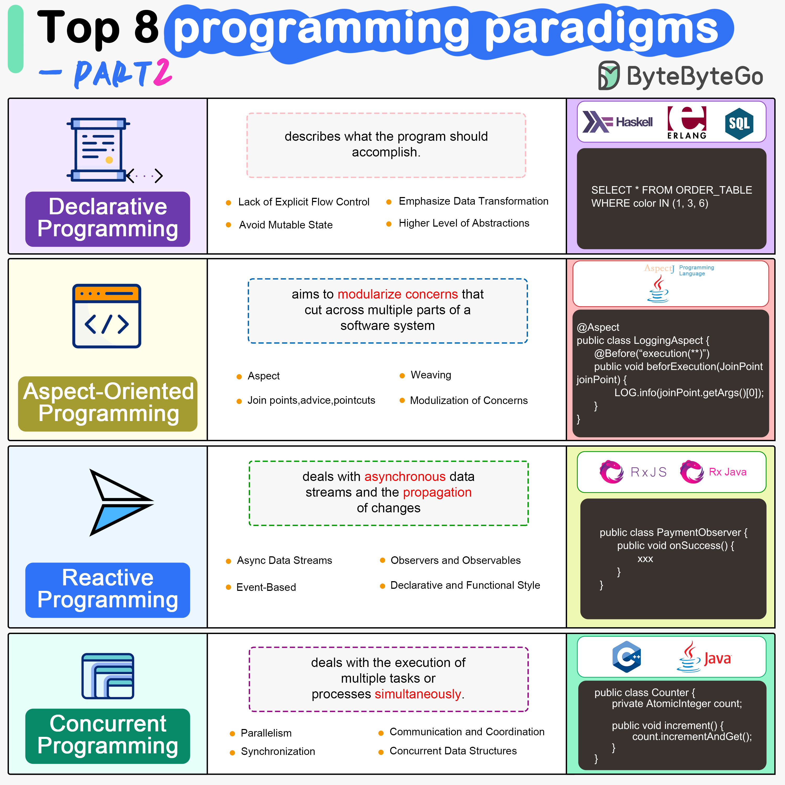

Imperative programming describes a sequence of steps that change the program’s state. Languages like C, C++, Java, Python (to an extent), and many others support imperative programming styles.
Declarative programming emphasizes expressing logic and functionalities without describing the control flow explicitly. Functional programming is a popular form of declarative programming.
Object-oriented programming (OOP) revolves around the concept of objects, which encapsulate data (attributes) and behavior (methods or functions). Common object-oriented programming languages include Java, C++, Python, Ruby, and C#.
Aspect-oriented programming (AOP) aims to modularize concerns that cut across multiple parts of a software system. AspectJ is one of the most well-known AOP frameworks that extends Java with AOP capabilities.
Functional Programming (FP) treats computation as the evaluation of mathematical functions and emphasizes the use of immutable data and declarative expressions. Languages like Haskell, Lisp, Erlang, and some features in languages like JavaScript, Python, and Scala support functional programming paradigms.
Reactive Programming deals with asynchronous data streams and the propagation of changes. Event-driven applications, and streaming data processing applications benefit from reactive programming.
Generic Programming aims at creating reusable, flexible, and type-independent code by allowing algorithms and data structures to be written without specifying the types they will operate on. Generic programming is extensively used in libraries and frameworks to create data structures like lists, stacks, queues, and algorithms like sorting, searching.
Concurrent Programming deals with the execution of multiple tasks or processes simultaneously, improving performance and resource utilization. Concurrent programming is utilized in various applications, including multi-threaded servers, parallel processing, concurrent web servers, and high-performance computing.